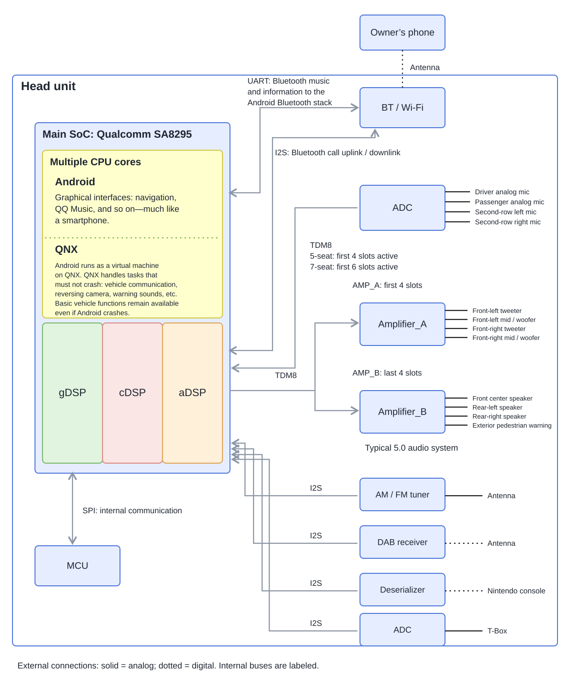
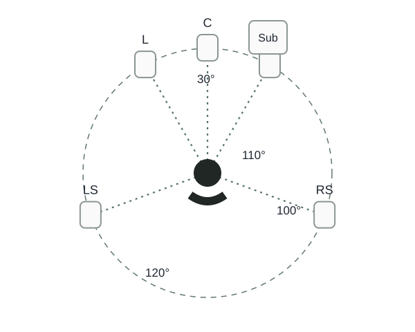
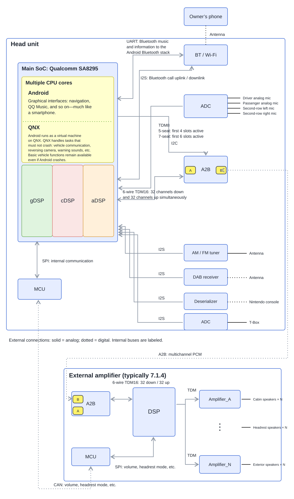
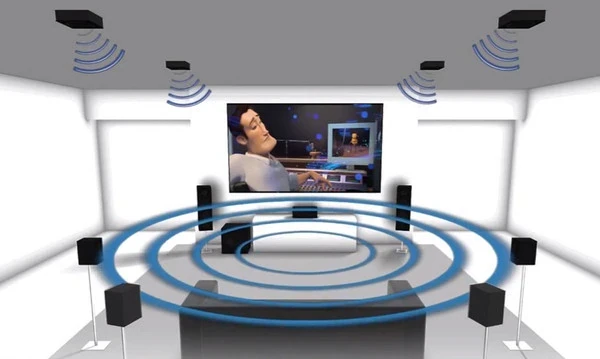
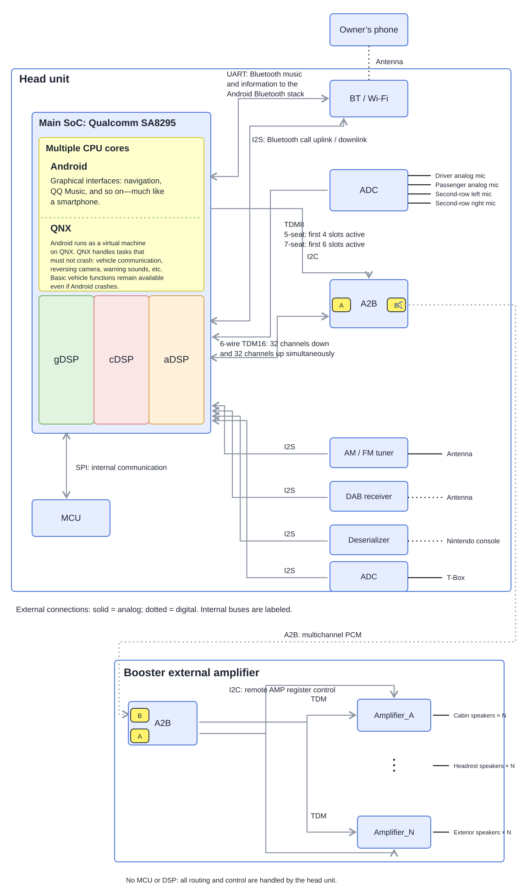
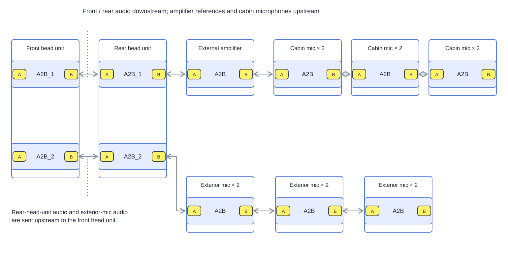
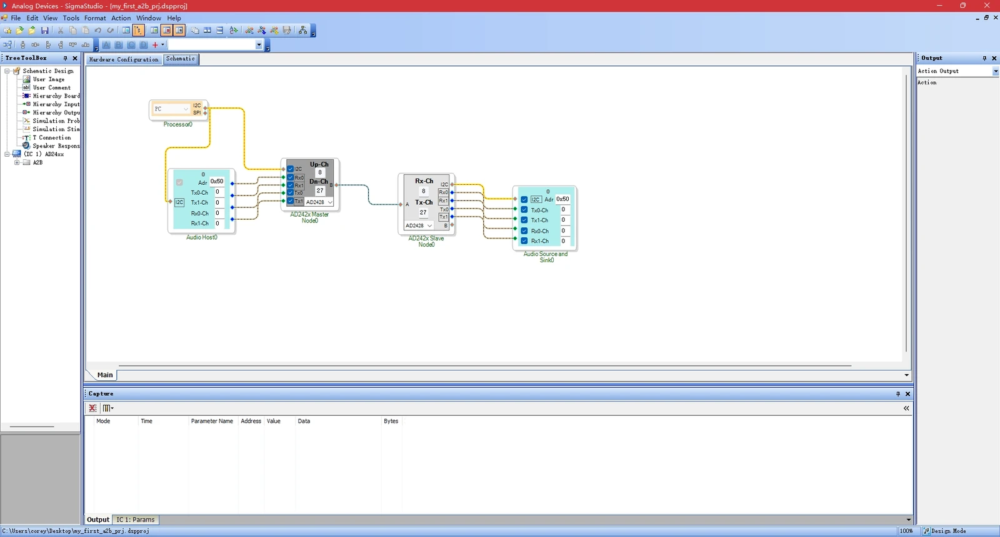

Automotive Cockpit Audio Architecture: The Hardware
It is time for the annual Guangzhou Auto Show again. This year’s cars seem to have a little less novelty and a little more in common. China’s automotive industry seems to be quietly moving from its pioneering days into an era of holding on to what it has built. Just another industry’s tides rising and falling, its landscape changing. But having been part of it myself, I cannot help feeling a little more about it than someone watching from the outside.
Using Qualcomm’s SA8295 platform as an example, this article introduces the mainstream automotive cockpit audio architectures used in China between 2021 and 2025. Technology moves quickly, but these architectures should still offer some useful reference points over the next few years. There is already plenty of material on this subject online. This post mainly draws on projects I have personally worked on, bringing together some technical thoughts and industry observations from my own experience.
I will explain the key terms as we go and build the discussion around clear architecture diagrams. So even if you are an audio expert from outside the automotive industry, you should find it easy to follow.
Enough talk. Let’s get straight to the diagrams.
1. Head unit with built-in amplifiers
A built-in amplifier means that the amplifier chips—AMP for short—and the main SoC are integrated on the same PCB, allowing the head unit to drive external speakers directly.
The advantage is relatively low cost, but the drawbacks are just as obvious. If a vehicle has a lot of speakers—more than twenty, for example—it becomes difficult to fit enough amplifier chips inside the head unit. An audio system also consumes a considerable amount of power, placing greater demands on the head unit’s cooling and power management. That is why built-in amplifiers are usually found in lower-spec models with fewer speakers.

The design in this diagram uses two AMP chipsets to build a 5.0 audio system. A 5.0 system is essentially a standard 5.1-channel system with the subwoofer removed. Subwoofers consume a lot of power, so a built-in amplifier design generally cannot drive one.
A 5.1-channel system consists of front left, front right, center, left surround, right surround, and a dedicated subwoofer. Since 2000, it has remained the most mainstream multichannel home audio format. Even today, when we download American TV shows online with multichannel soundtracks, Dolby 5.1 and DTS 5.1 are still the mainstream choices.
The evolution and widespread adoption of 5.1 came both from listeners’ relentless pursuit of immersive surround sound and from the long-running competition and cooperation between the two giants, Dolby and DTS.
In my view, 5.1 is the simplest and most effective configuration for surround sound. Compared with traditional stereo, adding a separate center channel greatly improves the clarity and placement of movie dialogue. Adding a pair of rear surround channels creates the feeling of sound coming from behind you, making the experience much more immersive.
As for the subwoofer, its job is to reproduce very low frequencies from 20 Hz to 120 Hz, giving explosions, thunder, and drumbeats more impact. Ordinary speakers struggle to reach effectively below 120 Hz, and human hearing is not very sensitive to the direction of low-frequency sound. So the usual industry practice is to mix the signals below 120 Hz from the three front channels and the surround channels together, and send them to a dedicated subwoofer. That way, the overall sound keeps its power and punch.

The architecture diagram makes extensive use of I2S and TDM. If these are unfamiliar, have a look at my earlier article:
Getting Started with Embedded Audio: I2S and TDM in Practice
A note on the head unit’s external connections in the diagrams: solid lines represent analog signal transmission, such as an amplifier sending analog electrical signals directly to a speaker. Dotted lines represent digital signal transmission.
Take radio reception as an example. A traditional tuner, used to receive AM/FM broadcasts, processes analog signals. When reception is weak, we hear that “shhh” noise. That happens because the tuner chip is demodulating an analog signal: interference and distortion show up directly as poorer sound quality.
DAB, on the other hand, is mainly widespread in Europe. Its audio is digital right from the source, and what travels through the air is a modulated digital signal. This gives it strong resistance to interference. As long as the signal reaches the decoding threshold, lossless digital audio can be recovered, without the kind of sound degradation we get with analog signals.
The Qualcomm SA8295 integrates multiple ARM cores and three types of dedicated Hexagon DSP cores. The ARM cores mainly run the QNX + Android hypervisor operating system, while the Hexagon DSPs focus on digital signal processing algorithms.
The sizes of the blocks in the diagram do not represent differences in computing power. They simply make it easier for me to draw the connections.
2. Head unit connected to an external amplifier
What is an external amplifier?
With an external amplifier, the head unit does not drive the speakers directly. Instead, it sends the audio to a separate external device for processing and power amplification.
This external amplifier module usually integrates an A2B chip for high-speed audio data transmission, an MCU to handle CAN commands, and a dedicated DSP for complex audio algorithms. A separate unit allows cooling and power output to be considered more fully, improving system stability. This design is also generally used in mid-range and premium vehicles, helping distribute costs sensibly across more highly equipped systems.
In operation, the head unit sends multichannel PCM digital audio to the external amplifier over the Automotive Audio Bus, or A2B. The DSP inside the amplifier processes the sound, and the amplifier then drives the corresponding speakers.

Unlike the limited driving capability of an amplifier built into the head unit, external amplifiers are mostly used for 7.1.4 systems. The 7.1.4 layout consists of seven channels—front left, center, front right, left surround, right surround, left rear surround, and right rear surround—one subwoofer channel, and four height channels that are key to the sense of space: top front left, top front right, top rear left, and top rear right.

7.1.4 has become synonymous with the highest level of immersive audio, thanks in large part to the popularity of Dolby Atmos. But the value of Dolby Atmos goes well beyond adding more channels. Its core idea of “sound objects” fundamentally changed how audio is produced and played back. If you would like to dig deeper, professional material such as the Dolby Atmos Mixing Guide is worth reading.
One thing is clear: there is little point in chasing more channels beyond 7.1.4. The Dolby Atmos content currently available is mainly optimized for a 7.1.4 layout. Even if the hardware supports more channels, there is almost no corresponding native content to experience, so the actual improvement is extremely limited.
Beyond the core channels, an external amplifier can also drive headrest speakers at every seat and even speakers outside the vehicle. Mainstream external amplifiers today often connect to thirty or forty speakers. Their output and integration capabilities are impressive.
External amplifiers are also an important battleground for audio brands such as Harman Kardon and Bose. These companies usually integrate their own sound-processing algorithms into the amplifier’s DSP. As for how they actually sound, that comes down to personal taste—everyone has their favorites.
Audio transmission between the head unit and external amplifier
The head unit and external amplifier exchange multichannel PCM over A2B in both directions, with clear roles for the uplink and downlink:
- Uplink — to the head unit
Content: The audio currently playing through the external amplifier’s speakers, such as front left, front right, rear left, rear right, and center.
Purpose: Mainly to provide reference signals for the head unit’s echo cancellation algorithm.
- Downlink — to the amplifier
Content: Usually more than twenty channels. For example: media audio (twelve channels for 7.1.4), navigation (one), phone calls (one), voice assistant (one), and instrument-cluster sounds (four: front, rear, left, and right).
Note: This gets into specific functional designs, so I will not go further for confidentiality reasons.
Some real-world scenarios
Finally, let’s finish our introduction to external amplifiers with a few practical scenarios.
Waking the voice assistant while playing Dolby Atmos
When the owner plays Dolby Atmos content through NetEase Cloud Music and wakes the head unit’s voice assistant, the system responds like this:
- The first twelve A2B downlink channels carry media audio, while the uplink channels carry reference signals sent back by the external amplifier.
- The head unit’s voice assistant continuously runs echo cancellation. With accurate reference signals, it can recognize the owner’s spoken wake-up command precisely, even when the music is loud.
- Once awake, the voice assistant plays its “Hello” response through the A2B downlink channel dedicated to voice interaction.
Switching a Bluetooth call into headrest mode
Suppose the owner is on a Bluetooth call through the head unit and switches to headrest mode when the conversation becomes private:
- During the call, the A2B downlink phone-audio channel carries the other person’s voice, played through the front-left and front-right speakers.
- As soon as the owner switches to headrest mode, a CAN message is sent to the external amplifier, instructing it to route the call to the driver’s headrest speakers.
Notice that, in headrest mode, the A2B downlink phone-audio channel has not changed. It is still the same channel.
Outdoor playback while camping
The owner wants to play music outside the vehicle while camping. After outdoor playback mode is enabled:
A CAN message for outdoor playback mode is sent to the external amplifier, which routes the media audio to the exterior speakers.
3. Head unit connected to a booster amplifier
A booster amplifier can be seen as a lower-cost version of an ordinary external amplifier. The thinking is simple: if the amplifier’s core job is power amplification, why not remove all of its logic-processing units, such as the MCU and DSP, and keep only the basic A2B transceiver and power amplifier (AMP) circuitry? That simplified amplifier is a booster.

So who configures the registers of the AMP chips inside the booster? This is where another capability of A2B comes in. As well as carrying multichannel PCM audio, it can use tunneling to carry I2C control signals at the same time. Once the head unit and booster have established an A2B connection, the head unit can configure the booster’s AMP registers remotely.
Because the architecture is so simple, there is no software or complex logic device inside the booster. It becomes a “pure hardware” slave device, controlled entirely by the head unit. The hardware department can therefore design the booster circuitry on its own, without support from a software team.
Of course, a booster behaves quite differently from a standard external amplifier in practice. Because of its simplified design, each channel of the multichannel PCM sent over A2B maps directly to one of the speakers connected to the booster.
For example, suppose the first twelve A2B channels are assigned to cabin speakers and the thirteenth is reserved for an exterior speaker. To enable outdoor playback, the head unit’s DSP only needs to route the audio to channel thirteen. All of the audio-routing logic lives in the head unit.
4. A2B is pretty powerful
A2B brings audio, data, and power together on one bus. It carries multichannel PCM audio and I2C commands, and can also provide a small amount of power remotely.
The most complex A2B design I have implemented, shown below, is a good example. The A2B microphones in this system draw power directly from the bus, with no additional power wiring.

And the audio latency introduced by A2B is only on the order of tens of microseconds. That’s pretty damn impressive.
A2B development mainly uses ADI’s graphical tool:
If you are interested, download it and have a play.

That’s everything for now. If you are interested, I will write a separate post, Automotive Cockpit Audio Architecture: The Software.